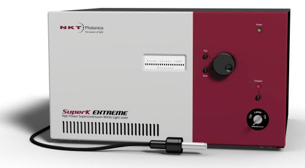

Where to Buy Supercontinuum Sources and Materials for Supercontinuum Generation
Definition: a nonlinear process for strong spectral broadening of light
See also our encyclopedia article on supercontinuum generation!
Related products: white light sources
14 suppliers for supercontinuum sources and materials for supercontinuum generation are listed in the RP Photonics Buyer's Guide. Both manufacturers and distributors can be registered.
| Suppliers with Ad Package | |
|---|---|
| Company | Product Description |
 Number 80, Fifth High-tech Street Donghu Development Zone 430205, Wuhan China Quality: ISO 9001:2008 | YSL Photonics' SC-Pro supercontinuum sources have been widely used in the nanophotonics, fluorescence spectroscopy/microscopy, OCT, photocurrent measurement, semiconductor inspection around the world. Our supercontinuum source offers >20 W average power, > 200 MHz external trigger repetition rate with the spectrum from 350–2500 nm. |
 All wavelengths. Lochhamer Schlag 19 82166 Gräfelfing Germany Quality: ISO 9001:2015 www.toptica.com Social: Facebook, LinkedIn, YouTube E-mail: Tel.: +49 89 85 83 70 Fax: +49 89 85 83 72 00 |  TOPTICA's FemtoFiber lasers provide reliable femto-/picosecond pulses based on polarization-maintaining fibers and SAM mode-locking. Different models (1560/780 nm, VIS/NIR tunable output, IR/NIR supercontinuum, short-pulse) cover a wide range of applications, e.g. time-domain terahertz, microscopy, attoscience and as seed lasers. |
 Blokken 84 3460 Birkerød Denmark Quality: ISO 9000:2015 www.nktphotonics.com Social: Facebook, LinkedIn, Twitter, YouTube Tel.: +45 4348 39 00 Fax: +45 4348 39 01 |  Our SuperK series is the industry leading range of turn-key supercontinuum lasers used by many of the most innovative companies within bio-imaging, semiconductor inspection and scientific instrumentation. The sources are extremely robust and reliable, build for intensive use and can replace multiple single line lasers, large dye and gas lasers as well as broadband sources like ASE sources and SLEDs. We offer supercontinuum solutions at every level – from nonlinear fiber and modules to complete turnkey SuperK supercontinuum lasers with plug & play accessories. See us at Laser World of Photonics China 2019 in Shanghai, March 20–22 (booth W2.2436)! |
| Your products are not listed here? Get an ad package! | |
| All Suppliers | |
|---|---|
| From your country: | |
Number 80, Fifth High-tech Street Donghu Development Zone 430205, Wuhan China Quality: ISO 9001:2008 | YSL Photonics' SC-Pro supercontinuum sources have been widely used in the nanophotonics, fluorescence spectroscopy/microscopy, OCT, photocurrent measurement, semiconductor inspection around the world. Our supercontinuum source offers >20 W average power, > 200 MHz external trigger repetition rate with the spectrum from 350–2500 nm. |
| Outside Asia: | |
3440 E. Britannia Drive, Suite 190 Tucson, AZ 85706 United States | |
20 Compass Point Ensign Way Southampton SO31 4RA United Kingdom | |
Ester Technopole, 1 Avenue d'Ester 87069 Limoges Cedex France | www.glophotonics.fr Tel.: +33 6 40 42 22 73 |
 21 rue de Broglie 22300 Lannion France | |
Headquarters 2 rue Paul Sabatier 22300 Lannion France | |
37 rue Henri Giffard, Z.I. Nord 87280 Limoges France | |
 Am Klopferspitz 19a 82152 Martinsried Germany | www.menlosystems.com Social: LinkedIn, YouTube E-mail: Tel.: +49 89 1 89 16 60 Fax: +49 89 1 89 16 61 11 |
Blokken 84 3460 Birkerød Denmark Quality: ISO 9000:2015 www.nktphotonics.com Social: Facebook, LinkedIn, Twitter, YouTube Tel.: +45 4348 39 00 Fax: +45 4348 39 01 | Our SuperK series is the industry leading range of turn-key supercontinuum lasers used by many of the most innovative companies within bio-imaging, semiconductor inspection and scientific instrumentation. The sources are extremely robust and reliable, build for intensive use and can replace multiple single line lasers, large dye and gas lasers as well as broadband sources like ASE sources and SLEDs. We offer supercontinuum solutions at every level – from nonlinear fiber and modules to complete turnkey SuperK supercontinuum lasers with plug & play accessories. |
ZI du Moulin Cheyroux 87700 Aixe sur Vienne France | |
41610 Corning Place Murrieta, CA 92562 United States | |
5795 De Gaspe Avenue Montreal, QC, H2S 2X3 Canada | |
470 Lakeside Drive, Suite F Sunnyvale CA 94085 United States | |
All wavelengths. Lochhamer Schlag 19 82166 Gräfelfing Germany Quality: ISO 9001:2015 www.toptica.com Social: Facebook, LinkedIn, YouTube E-mail: Tel.: +49 89 85 83 70 Fax: +49 89 85 83 72 00 | TOPTICA's FemtoFiber lasers provide reliable femto-/picosecond pulses based on polarization-maintaining fibers and SAM mode-locking. Different models (1560/780 nm, VIS/NIR tunable output, IR/NIR supercontinuum, short-pulse) cover a wide range of applications, e.g. time-domain terahertz, microscopy, attoscience and as seed lasers. |
Click on a company entry to mark it. Product entries of suppliers having an ad package are displayed with a logo, product description and product image. | |
Users: if any displayed information is incorrect (e.g., a listed supplier does not offer such products) or legally problematic, please notify RP Photonics so that the problem can be solved.
Suppliers: you can report modified data using a form, which is provided via the button "Edit profile data" on your company profile page. You can obtain ad package for getting a much improved visibility and many more leads.
If you are a supplier and want to be listed, please use the registration form.
An already registered supplier can use a customized form to report the full list of offered photonics products. That form is reachable with a link at the bottom of the supplier's profile page.
Anyone, not only suppliers themselves, can report additional suppliers. If possible, please provide a web address showing that this supplier indeed offers such products.
If you like this buyer's guide, share it with your friends and colleagues, e.g. via social media: